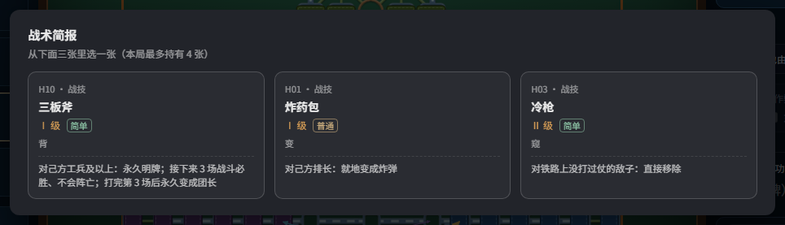
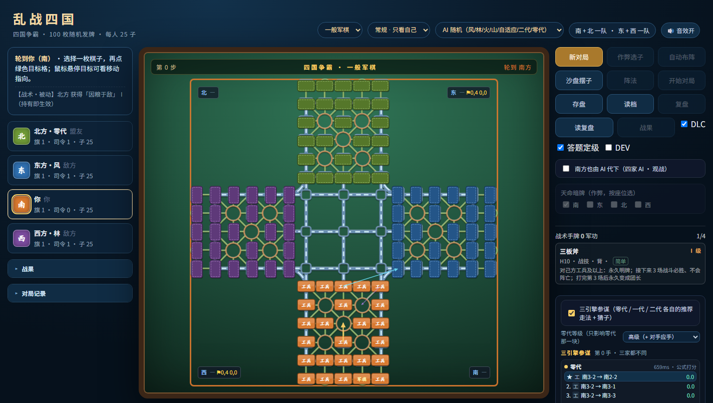
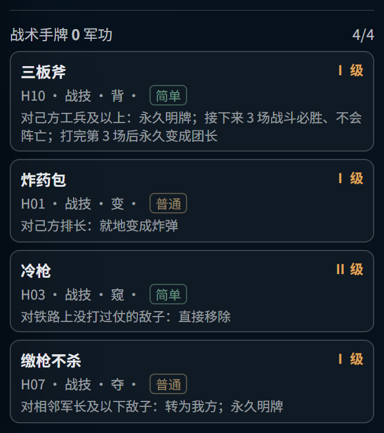
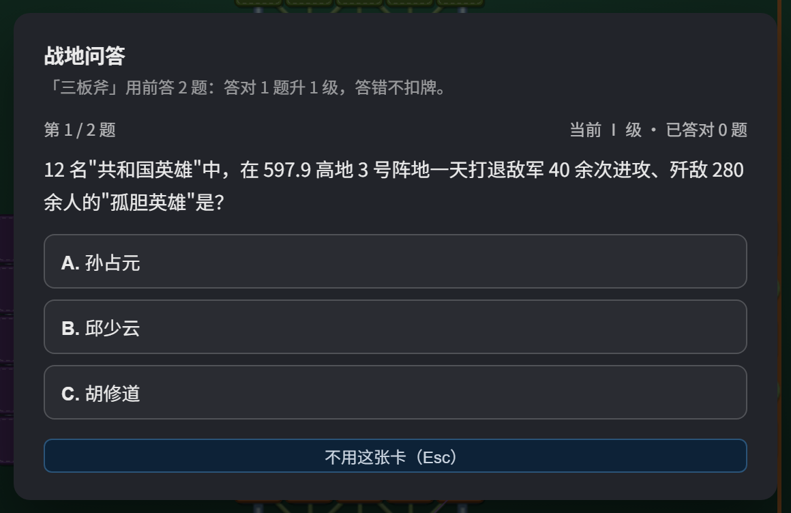

这是什么
在原来的四国军棋上加了一层战术卡：一场对局里，四家各自会拿到几张“一次性手段”——
把排长变成炸弹、把炸弹哑火两回合、往敌方行营里塞一枚钉子、让一枚子三场战斗必胜……
- 底子不变：一般军棋（标准 25 子）/ 乱战四国，规则、结算、AI 都是原版，卡是外挂的一层。
- 卡不白给：每张卡要挑时机、挑目标；能不能打出效果，取决于你看不看得懂局面。
- 单机可玩：三个座位由本地 AI 接手，不需要联网、不需要注册。

每局开始时、第 50 / 100 步、以及每次扛旗，都会弹一次「战术简报」——三张里挑一张，手牌上限 4 张
三步开始
① 打开双击 index.html，用 Chrome / Edge 打开最好。
② 备局左上选玩法与座位 → 点「自动布阵」（也可以自己拖）→「开始对局」。
③ 开打控制区的 DLC 默认已勾上；不想要卡就取消勾选，回到纯军棋。
开局会弹一次「战术简报」（三选一）；之后在全局第 50 步、第 100 步、以及每次扛旗时各弹一次。
手牌最多 4 张。

开局后的界面：中间是棋盘，左边是你的四家状态与日志，右边一列从上到下是操作按钮、战术手牌、参谋面板
战术卡怎么用
规则只有三条，记住就不会点错：
- 只能在自己的回合用。轮到别人时点卡不会有反应，日志会写一行原因。
- 被动卡点一下就生效。这类卡没有目标，名字后面标着「被动」。
- 主动卡：先答 2 道题，再在棋盘上点目标。答完题后，合法目标会亮成绿格；点绿格才真正生效（无需目标的卡答完题直接生效）。
操作细节
- 多目标卡（如「守阵」Ⅲ 级）要收满 2–3 个目标才生效，提示里会写
1/3。
- 「潜伏」「换位」「渗透」这类要选两次：先选自己的子，再选落点/对手。
- 选错了：再点一次已选的格子可取消；Esc 或再点一次那张卡，整套放弃。
- 卡生效后会立刻回到正常对局，不用关 DLC、不用再点一次。

右栏最下面的「战术手牌」：四张各不相同，卡面直接写着实际效果；点一张就进入使用流程
答题定级：答对越多，打得越狠
每张卡都有 Ⅰ / Ⅱ / Ⅲ 三级。从这一版起，主动卡打出去之前要先答 2 道题——
题目全部出自《抗美援朝的英雄事迹》题库（200 题，三选一），答得越好，这张卡越强。
- 起步等级 = 手牌等级：Ⅰ 级卡从 Ⅰ 级起算，Ⅱ / Ⅲ 级卡从各自的等级起算。
- 每答对 1 题升 1 级，封顶 Ⅲ 级：Ⅰ 级卡全对就是 Ⅲ 级效果；Ⅱ 级卡答对 1 题就满。
- 答错不扣牌：效果照常打出，只是等级低一档。答完立刻给正确答案、英雄名与依据章节。
- 放弃不消耗：按 Esc 或点「不用这张卡」，卡还在手上，什么时候打都行。
- 被动卡不答题：抽到即生效，没有出手时机；Ⅲ 级卡也不用答，它已经满级了。

战地问答：每题三个选项，选完立刻判对错并给出依据；两题都答对就从 Ⅰ 级升到 Ⅲ 级
不想答题？取消控制区的「答题定级」勾选即可回到纯等级模式（开发者模式 DEV 下也会自动跳过，方便测卡）。
每局最多只出 2 题，题目从 200 题里随机抽，同一局不会重复问同一道。
两张「等级」相关的规则，一起说清
- AI 拿满级牌：三个 AI 座位发牌就是 Ⅲ 级——它们不答题，不能因此比人弱一档。你仍从手牌等级起步、答对往上加。
- Ⅲ 级整体加强了：炸药包改成在自家空地直接生成 2 个炸弹、冷枪取消「铁路 / 没打过仗」的限制、缴枪不杀连司令都能夺、三板斧打完不降级反而 +1 级、撒豆成兵每回合空降 2 枚师长/军长且一直掉到本局结束、乌龟阵 5 枚后两排全变雷……
卡池：137 张，按上手难度分三档
牌分七卷，来源各不相同，但用法统一：
| 卷 | 张数 | 是什么 |
|---|
| 战技 | 26 | 最直接的那批：炸药包、冷枪、缴枪不杀、三板斧、晋级、降级…… |
| 孙子 | 13 | 十三篇各一张，偏判断与结构，几乎没有爆炸效果 |
| 三十六计 | 29 | 诡道，“骗”和“限制”最多 |
| 典故 | 24 | 成语，看名字就知道大概 |
| 棋理 | 23 | 军棋圈自己的黑话：双飞、空炸、假司令、控盘、抗旗…… |
| 奇想 | 10 | 实验区：夜战、坑道、无线电静默 |
| 简术 | 12 | 教学层：侦察、复制、换衔、硬吃、洞察 |
每张卡带一个上手难度标签（只算操作复杂度，不代表强弱）：
| 档位 | 张数 | 读法 |
|---|
| 简单 | 52 | 点一下就懂，新手直接能用 |
| 普通 | 58 | 要选目标 / 要接受代价 |
| 复杂 | 25 | 两步选目标，或改了棋盘规则 |
前几次玩，手牌里优先用绿色的；红色的（瞒天过海、换家、军旗易位、假工兵、潜伏、换位……）先放到残局再试。
最好玩的一批：12 张招牌卡
137 张里有一半是「+1 级战力」「冻结两回合」这种稳稳的收益。真正让人记住这一版的是下面这 12 张——
它们不是加数值，而是把某一件事的规则改掉。下面写的都是Ⅰ 级的实际效果，升到 Ⅲ 级只会更狠。
头牌：一局里最想抽到的三张
三板斧H10 · 战技 · 简单
主动 · 选 1 枚己方工兵及以上的子
指定一子，永久明牌；接下来 3 场战斗必胜、不会阵亡；打完第 3 场后永久变成团长。
连炸弹、地雷、大本营平兑都能压过去——撞上就是一个白吃。Ⅲ 级是 5 场。
代价是全程明牌：对手会算好三场，用小子喂掉、把大子撤走。别拿它去撞空。
缴枪不杀H07 · 战技 · 普通
主动 · 选与己方子相邻的敌方棋子
把相邻的军长及以下敌子直接变成我方棋子，永久明牌。
四国里最直接的「抢人」：贴上去，对面的师长、军长就换旗了。Ⅲ 级一次抢 2 枚。
只能抢军长及以下；司令抢不动，炸弹地雷也不在名单里。
潜伏H05 · 战技 · 复杂
主动 · 先选己方子，再选落点
把己方一子送进敌方空着的行营。
行营是全场唯一「谁都能进、不挨打」的格子。一枚师长坐进对手的行营，等于在他家门口钉了个钉子。
敌方行营满了就无处可去；进去以后还得自己走出来接应。
诡道：先把对手的眼睛蒙上
夜战R1 · 奇想 · 普通
主动 · 无需选目标
10 个回合内，所有明牌全部失效——连战斗后公布兵种也停。
专治「对面把我半张棋盘都探明了」。你已知的信息还在脑子里，他的记录被清零。
你自己也看不见新情报；别在需要精确算牌的时候开。
假司令Q3 · 棋理 · 简单
主动 · 选己方营长及以下
这枚子对外显示成司令，持续 2 个回合（Ⅲ 级 5 个回合）。
军棋最老的一招：一枚小子顶着司令的名头站到铁路口，对面的大子会绕，炸弹会提前用掉。
只是「看起来像」：真打起来还是它自己的军衔，被吃就露馅。
空城计T25 · 三十六计 · 被动
被动 · 抽到即生效
你的大本营内被攻一律判平兑。
最后一道保险：谁来啃大本营都得陪一条命，僵持局里等于白赚一手。
平兑会连着你的守军一起没；军旗还是得靠人守。
无线电静默R3 · 奇想 · 普通
主动 · 无需选目标
敌方 2 个回合内不能用战术卡。
抢在对手攒了四张牌准备翻盘时按下去，他的整套连招直接哑火。Ⅲ 级 4 个回合。
只封对面两个人，不包括你自己队友——四国里这条很关键。
怪招：把规矩本身改了
炸药包H01 · 战技 · 普通
主动 · 选己方排长
这枚排长就地变成炸弹（Ⅲ 级一次 2 枚）。
布局时把排长放在铁路口，开打三步内对面的大子就自己撞上来了。
变完就明摆着是炸弹，只赚第一下。
乌龟阵Q10 · 棋理 · 普通
主动 · 选己方后两排的小子
把后两排的小子就地变成地雷（Ⅲ 级 3 枚）。
原来是废子的连长、排长，一秒变守家主力；对手的工兵不够用就啃不动。
变雷以后自己也走不了，别把通路堵死。
瞒天过海T1 · 三十六计 · 复杂
主动 · 选己方地雷
把地雷挪到己方前两排的空地。
所有人的默认假设都是「雷在后两排」。你把雷搬到前线，对面的先锋会自己踩上去。
前两排的雷挡不住奇袭，属于一次性赌博。
七擒七纵D5 · 典故 · 普通
主动 · 选相邻的军长及以下敌子
敌子转为我方，永久明牌，从此不能再移动。
和「缴枪不杀」同类，但换来的是个不动的钉子——正好用来堵路口、守行营。
不能动的子也救不回来，位置选错就白送。
借兵J6 · 简术 · 普通
主动 · 选盟友的棋子
把队友的一枚子拿过来，永久明牌（Ⅲ 级 2 枚）。
四国才有的荒唐事：北方快被打穿时，把它的军长借到南边来救火。
盟友会少一枚子、阵型出洞；AI 队友不会抗议，但会变弱。
另外这几张也值得一试
- 冷枪（H03）：直接移除铁路上「还没打过仗」的敌子——专打刚出家门的大子。
- 爆破（H15）：以己方一子为圆心，本格加相邻四格的敌子全部消灭，清场用。
- 定时（Q17）：指定一片，3 个回合后引爆，逼对手离开好位置。
- 降级（H13）：把这枚子提到军长，然后每个回合掉一级，直到变回工兵——短期尖刀，长期废子。
- 纸上谈兵（D18）：弃掉手里一张卡，换 25 军功（Ⅲ 级 45），是「卡不好用就换钱」的出口。
- 撒豆成兵（D23）：每走完一手，就在我方阵地的空位天降随机棋力的暗子——Ⅰ 级 1 枚、2 回合；Ⅲ 级是 2 枚且至少师长，而且一直掉到本局结束。阵地越空越赚，落在行营里更是白捡一个安全位；打到中后期子力被打空时，它等于源源不断地补高级子。
- 宁有种乎（D24）：随机 2 枚己方子改军衔，越小越容易被选中——一半升 1 级，一半在原级上下浮动 2 级；改完永久明牌。军长与司令不参与，不会把司令洗成工兵。
几个现成的连招
- 三板斧 + 冷枪：先用冷枪清掉铁路上的拦路子，再让三板斧的子顺着铁路直冲大本营，三场必胜刚好够拆三道门。
- 乌龟阵 + 瞒天过海：把后两排换成雷，再搬两颗到前线，对手的工兵根本不够拆。
- 潜伏 + 缴枪不杀：先把子送进敌方行营，贴着对方主力，下一回合直接抢人。
- 夜战 + 假司令：情报全黑的时候，一枚假司令比真司令更吓人。
两个附带的系统
军功
吃子、扛旗、零伤亡会攒“军功”，两个出口：
- 30 军功 = 三选一时重抽一次（单局最多 2 次）
- 40 军功 = 把手上一张卡升一级（最高 Ⅲ 级）
卡有 Ⅰ / Ⅱ / Ⅲ 三级，等级越高效果越强（数量、时长、范围、数值之一）。同一局里 Ⅲ 级卡四家合计最多 2 张。
对局记录
左侧日志会把打出的卡记成一行，例如
【战术】南方 打出「炸药包」Ⅱ → 自己的一枚子@南方4-3，
主动 / 被动 / 调试三种行用不同颜色区分。战报里另有一块「战术卡」，按座位列出用过的卡与次数。
复盘、存档都带着这份记录。
调试用：开发者模式
想试某一张卡的效果，不用等抽到它：按 F2（或勾控制区的 DEV）打开右下角卡池面板，
点任意一张卡就直接加入手牌。面板里还能：
- 按卷、按难度筛选，或直接搜卡名/编号/效果文字
- 切 Ⅰ / Ⅱ / Ⅲ 级，切座位（可以给 AI 挂效果，测“对手被加强时怎么打”）
- 看当前所有持续状态、一键清空、↶ 回滚到上一次操作前
DEV 只负责“发牌”，不改棋盘规则：棋子照常走、照常吃，手牌还是要按上面的规矩点。
文件清单
| 文件 | 作用 |
|---|
index.html | 游戏本体，双击即玩 |
style.css · ui.js | 界面与交互 |
board.js · qq_layout.js | 棋盘与布局 |
game.js | 规则与结算（只在战斗处留了一个 DLC 钩子） |
ai.js · ai_gen0.js · tactics.js | AI |
dlc_status.js · dlc_atoms.js · dlc_cards.js · dlc.js | 战术卡系统（卡是数据，不改规则） |
assets/ · sounds/ | 棋盘底图与音效 |
介绍.html | 原版玩法说明（规则、阵型、术语） |
整个目录拷走就能玩，不需要安装、不需要服务器。
常见问题
打开是白屏 / 没有样式
确认整个文件夹一起拷走（不要只拷 index.html），并且用浏览器打开而不是用编辑器预览。
没有声音
浏览器要求先有一次点击才允许播放音频，点一下棋盘即可；部分浏览器默认静音标签页。
存档在哪
存在浏览器本地（localStorage），换浏览器或清缓存会丢。重要对局请用「保存复盘」导出文件。
能联机吗
不能。这是单机版：三个座位由 AI 接手。控制区的“外援”是给另一个本地程序用的接口，普通玩家不用管。
有没有还没做完的卡
有 7 张是“近似实现”：效果方向对，但少了一层路径/条件约束（比如位移卡只保证落到合法空格，不检查途中经过谁）。
卡面写的是**实际效果**，不是设计稿。